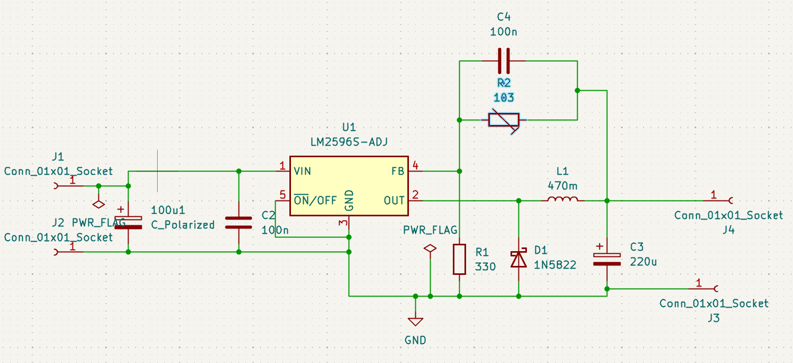
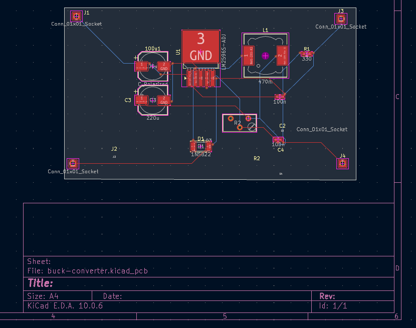

Buck Converter · LM2596S-ADJ

Overview
Adjustable step-down (buck) DC-DC converter PCB designed in KiCad, built around the LM2596S-ADJ switching regulator. The board takes a higher DC input voltage (7–40 V) and steps it down to an adjustable output voltage via a 10 k trimmer, capable of driving loads up to 3 A. This was my first PCB design project.
Schematic

Key Components
- U1 — LM2596S-ADJ — Adjustable buck switching regulator, 150 kHz fixed frequency, up to 3 A output
- D1 — 1N5822 — Schottky rectifier for freewheeling diode
- L1 — 470 uH — Power inductor (12 × 12 mm) for energy storage
- C1 — Electrolytic input bulk capacitance
- C3 — 220 uF — Output bulk capacitance
- C2, C4 — 100 nF — Decoupling capacitors for noise suppression
- R2 — 10 k trimmer — Output voltage adjustment via feedback divider
- J1–J4 — Solder wire pad connections for input and output
PCB Layout

Tools & Flow
- Designed entirely in KiCad (schematic, PCB layout, 3D rendering)
- Auto-routed using SPECCTRA DSN/SES flow
- Includes complete KiCad project files (
.kicad_sch,.kicad_pcb,.kicad_pro)
Status: first PCB design attempt · fully routed board with 3D render output.